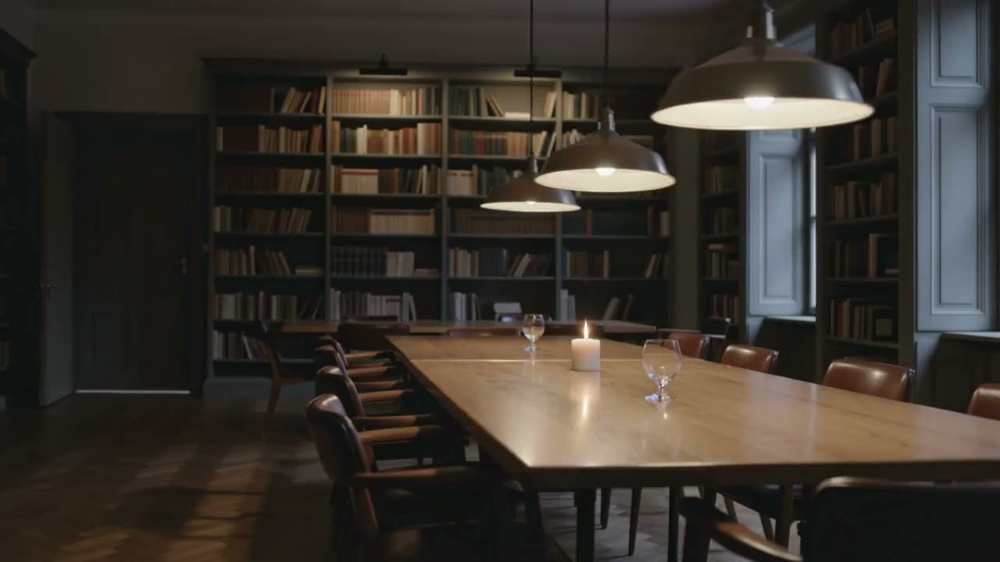

한 뿌리, 세 이름,
함께 앉을 자리 두 곳
사회공헌사업단, 시에스알웍스(주), 제주자랑(주)은 역할이 달라 이름이 나뉘었을 뿐 한 뿌리에서 운영합니다. 카페 아모르파티는 이 정신이 일상과 만나는 자리입니다. 기업과 단체는 제휴사로, 전문가는 파트너로 함께 앉으실 수 있습니다.
“네 운명을 사랑하라. 그것이 너의 삶을 사랑하는 유일한 방법이다.”
아모르파티(Amor Fati) · 니체
창립회원 모집은 카페 홈페이지(amorfaticafe.net)가 정본입니다. 이 페이지는 카페와 사업단을 잇는 다리이며 회원을 중복 모집하지 않습니다.